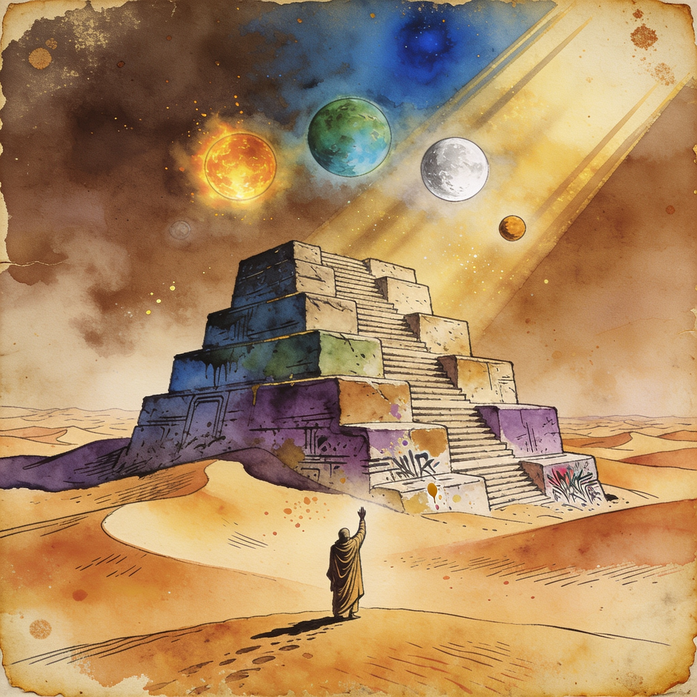

Tools & Runtimes
Inference Stack bundles vLLM, LiteLLM, llm-d and Grafana into one command
Inference Stack v0.1.2 launched as a single-command Docker/Kubernetes bundle that wires the common self-hosted serving pieces together: vLLM for inference, LiteLLM as gateway, llm-d for distributed serving and Grafana for metrics. It ships a launcher that searches Hugging Face, estimates GPU requirements, and includes a built-in Playground and metrics dashboards, collapsing the usual multi-tool setup into one manifest.